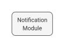
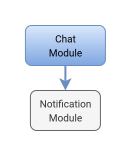

Arquitetura de Sistema
1. Versões
2. Visão Geral
O sistema adota uma arquitetura modular monolítica baseada em NestJS (backend) e Next.js (frontend), com PostgreSQL como banco de dados relacional e armazenamento externo de arquivos (ex: AWS S3) para anexos. A comunicação entre frontend e backend ocorre por meio de uma API RESTful segura, utilizando autenticação JWT com suporte a 2FA.
3. Diagrama de Arquitetura do Sistema

3.1 Módulos Backend
3.2 Diagrama de Dependência entre Módulos

3.2.1 AuthModule
| Depende de |
Descrição da Dependência |
| UserModule |
Gerencia as credenciais dos usuários. |
3.2.2 UserModule
| Depende de |
Descrição da Dependência |
| NotificationModule |
Envia alertas de cadastro e ativação. |
3.2.3 TicketModule

| Depende de |
Descrição da Dependência |
| UserModule |
Chamados são criados por usuários. |
| ProductModule |
Cada chamado envolve um produto. |
| ContractModule |
Valida a cobertura contratual. |
| AssignmentModule |
Atribuição automática ao criar chamado. |
| SlaModule |
Define prazos com base no tipo de chamado. |
| TimerModule |
Tempo de atendimento é rastreado. |
| ChatModule |
Chat contextualizado por chamado. |
| FeedbackModule |
Recebe feedback pós-atendimento. |
| NotificationModule |
Dispara notificações de status. |
3.2.4 SelfServiceModule

| Depende de |
Descrição da Dependência |
| KnowledgeBaseModule |
Sugere artigos com base em palavras-chave. |
| TicketModule |
Cria chamados automaticamente. |
| FeedbackModule |
Coleta avaliação da experiência. |
3.2.5 FeedbackModule
| Depende de |
Descrição da Dependência |
| TicketModule |
Avaliações são baseadas em chamados. |
| UserModule |
Usuários avaliam artigos. |
3.2.6 SLAModule
| Depende de |
Descrição da Dependência |
| - |
Não depende de nenhum outro módulo. |
3.2.7 TimerModule
| Depende de |
Descrição da Dependência |
| TicketModule |
Contagem de tempo por atendimento. |
3.2.8 ContractModule

| Depende de |
Descrição da Dependência |
| ProductModule |
Contratos incluem produtos e serviços. |
| UserModule |
Contratos são vinculados a clientes (usuários). |
3.2.9 ReportModule

| Depende de |
Descrição da Dependência |
| TicketModule |
Análise de desempenho de chamados. |
| FeedbackModule |
Métricas de satisfação. |
| TimerModule |
Dados de tempo e SLA. |
| SlaModule |
Monitoramento de prazos e violações. |
| ProductModule |
Agrupamento por produto. |
3.2.10 DashboardModule

| Depende de |
Descrição da Dependência |
| ReportModule |
Consome dados consolidados. |
| TicketModule |
Exibe volume de chamados. |
| FeedbackModule |
Exibe estatísticas de feedback. |
| SlaModule |
Métricas de SLA. |
| TimerModule |
Tempo médio por técnico. |
| ProductModule |
Indicadores por produto. |
3.2.11 NotificationModule

| Depende de |
Descrição da Dependência |
| ChatModule |
Envia alertas por nova mensagem. |
| TicketModule |
Dispara eventos de chamado. |
| FeedbackModule |
Notifica feedbacks recebidos. |
3.2.12 AuditModule
| Depende de |
Descrição da Dependência |
| AuthModule |
Registra logins e autenticações. |
3.2.13 AssignmentModule

| Depende de |
Descrição da Dependência |
| UserModule |
Atribuição depende da lista de usuários. |
| TicketModule |
Atribuições são feitas sobre chamados. |
3.2.14 ChatModule

| Depende de |
Descrição da Dependência |
| UserModule |
Identifica remetente e destinatário. |
| TicketModule |
Um chat é relacionado a um atendimento de chamado |
3.2.15 ProductModule
| Depende de |
Descrição da Dependência |
| - |
Não depende de nenhum outro módulo. |
3.2.16 KnowledgeBaseModule
| Depende de |
Descrição da Dependência |
| - |
Não depende de nenhum outro módulo. |
4. Arquitetura de Software (Backend)
4.1 Visão Geral
O backend do sistema BRISA Helpdesk seguirá o padrão arquitetural Layered Architecture (Arquitetura em Camadas), conforme descrito no livro "Software Architecture Patterns" (O'Reilly).
4.2 Diagrama de Arquitetura de Software (Backend)

4.3 Camadas da Arquitetura
Esta abordagem organiza o código em quatro camadas principais, cada uma com responsabilidades bem definidas e limites claros.
| Camada |
Responsabilidades Principais |
Exemplos |
| Presentation Layer |
Lida com entrada/saída de dados, recebe requisições HTTP, valida dados, mapeia DTOs e delega para a camada de negócio. |
user.controller.ts, user-create-update.dto.ts |
| Business Layer |
Contém a lógica de negócio central do sistema, orquestrando regras, fluxos e validações complexas. |
user.service.ts, user-not-found.exception.ts |
| Persistence Layer |
É o código da sua aplicação que se comunica com o Database Layer. É responsável por consultar, salvar, atualizar e deletar dados, independentemente de qual tecnologia de banco está por trás (ORM, JDBC, Prisma, etc.). |
user.repository.ts, prisma.service.ts |
| Database Layer |
Infraestrutura de armazenamento físico e persistente. Inclui bancos de dados relacionais (PostgreSQL), não relacionais (Redis) e armazenamentos de objetos (ex.: Firebase Storage, AWS S3). |
PostgreSQL, Redis, Firebase |
{kind=link}
{kind=link}
{kind=link}
{kind=link}
{kind=link}
{kind=link}
{kind=link}
{kind=link}
{kind=link}
{kind=link}